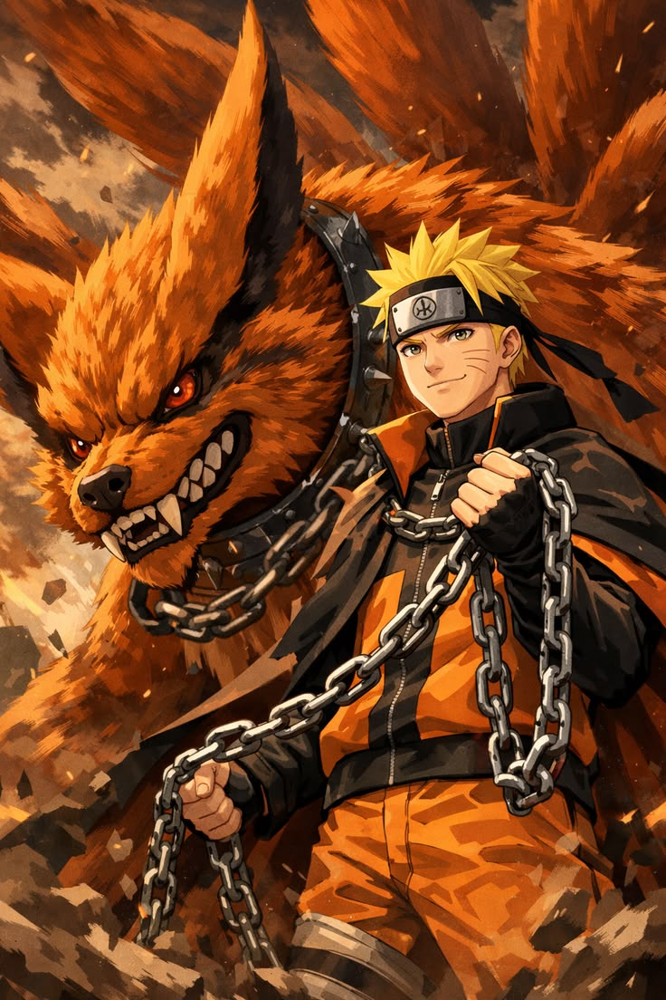

Naruto Uzumaki is the main protagonist of Naruto and one of the most inspiring ninja in the series, known for his determination, courage, and never-give-up attitude. Born in Konohagakure, Naruto grew up as an orphan and was often feared and isolated because he carried the powerful Nine-Tailed Fox, Kurama, sealed inside him. Despite this painful childhood, he dreamed of becoming Hokage so that he could earn the respect and acknowledgment of his village.
Naruto trained under skilled mentors like Kakashi Hatake and Jiraiya, who helped him grow stronger both as a ninja and as a person. He is known for his powerful techniques such as the Rasengan and his ability to use Shadow Clone Jutsu effectively. Over time, Naruto also mastered Sage Mode and gained control over Kurama’s chakra, greatly increasing his strength. What truly sets Naruto apart is his ability to connect with others and change their hearts, including former enemies. His journey from a lonely outcast to the Seventh Hokage is a story of perseverance, friendship, and hope, making him one of the most iconic heroes in anime history.
Naruto Uzumaki has a vibrant and inspiring personality that makes him one of the most beloved characters in Naruto. He is energetic, cheerful, and often loud, always seeking attention and recognition due to his lonely childhood in Konohagakure. Despite being misunderstood and treated as an outcast, Naruto never gives up and continues to push forward with a strong will and determination.
One of his most defining traits is his unwavering perseverance—he refuses to abandon his goals or his friends, no matter how difficult the situation becomes. Naruto is deeply compassionate and has a unique ability to understand others’ pain, which allows him to form strong bonds and even change the hearts of his enemies.
He is also optimistic and believes strongly in peace, always trying to break the cycle of hatred in the ninja world. While he can be impulsive and stubborn at times, these traits are balanced by his loyalty and courage. Over time, Naruto matures into a wise and responsible leader, but he never loses his kind heart and determination, making his personality both powerful and deeply relatable.
Naruto Uzumaki possesses a wide range of powerful abilities that make him one of the strongest shinobi in Naruto. His strength comes from a combination of natural talent, hard work, and the power of the Nine-Tailed Fox, Kurama, sealed within him. Naruto is best known for his Shadow Clone Jutsu, which allows him to create multiple copies of himself for combat and training. He also mastered the Rasengan, a powerful spinning chakra attack taught by Jiraiya, and later developed stronger versions like the Rasenshuriken.
One of his greatest abilities is Sage Mode, learned at Mount Myoboku, which enhances his strength, speed, and sensory skills by using natural energy. In addition, Naruto gained control over Kurama’s chakra, allowing him to enter powerful forms that greatly boost his abilities and endurance. He also possesses immense chakra reserves, fast healing, and strong determination in battle. As he grows, Naruto gains abilities from all Tailed Beasts and even powers granted by the Sage of Six Paths, making him incredibly powerful. His combination of strength, creativity, and willpower makes him one of the greatest ninjas in the series.

Naruto Uzumaki carried out many important missions throughout Naruto, each contributing to his growth as a ninja and a leader. One of his earliest major missions was the Land of Waves mission, where he protected Tazuna alongside his team led by Kakashi Hatake. This mission taught Naruto the harsh realities of the ninja world and strengthened his resolve to protect others. Another significant mission was his long-term goal to bring back his friend Sasuke Uchiha, who had left Konohagakure. Naruto risked his life multiple times in pursuit of this mission, showing his deep loyalty and determination.
Naruto also played a crucial role in the Fourth Great Ninja War, where he fought against powerful enemies and worked alongside other nations to protect the world. His mission was not only to win battles but also to unite people and end hatred. One of his most important missions was defeating Nagato (Pain) and later bringing peace by understanding his enemy rather than destroying him. Overall, Naruto’s missions reflect his courage, compassion, and unwavering commitment to protecting others and achieving peace.
Naruto Uzumaki’s Sage Mode is one of his most powerful transformations in Naruto, greatly enhancing his abilities in battle. He learned this technique at Mount Myoboku under the guidance of the toad sages like Fukasaku. Sage Mode allows Naruto to gather and balance natural energy with his own chakra, significantly increasing his strength, speed, durability, and sensory perception.
Unlike Jiraiya, Naruto achieves a perfect Sage Mode, meaning he can balance the energy without physical mutations, giving him a more stable and efficient form. In this state, his eyes change to a toad-like appearance, and he gains the ability to sense danger and attacks even without seeing them.
Naruto can also use enhanced versions of his techniques, such as Sage Art: Rasenshuriken, which becomes far more powerful and effective. Additionally, he can use Frog Kumite, an advanced fighting style that allows him to strike opponents without direct contact by using natural energy.